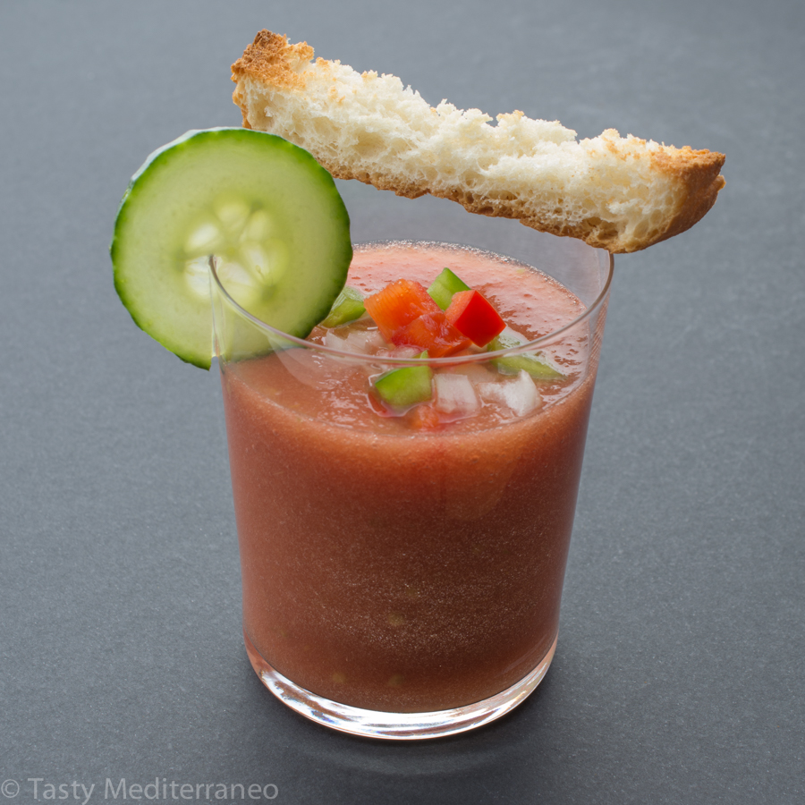
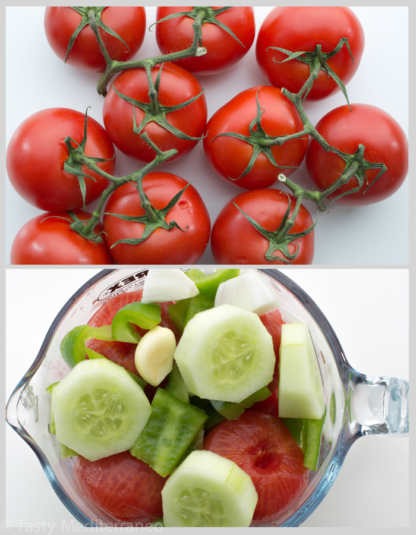
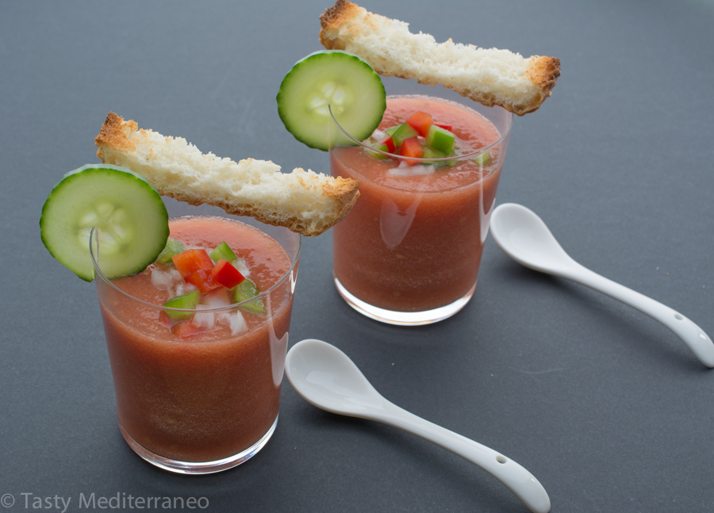
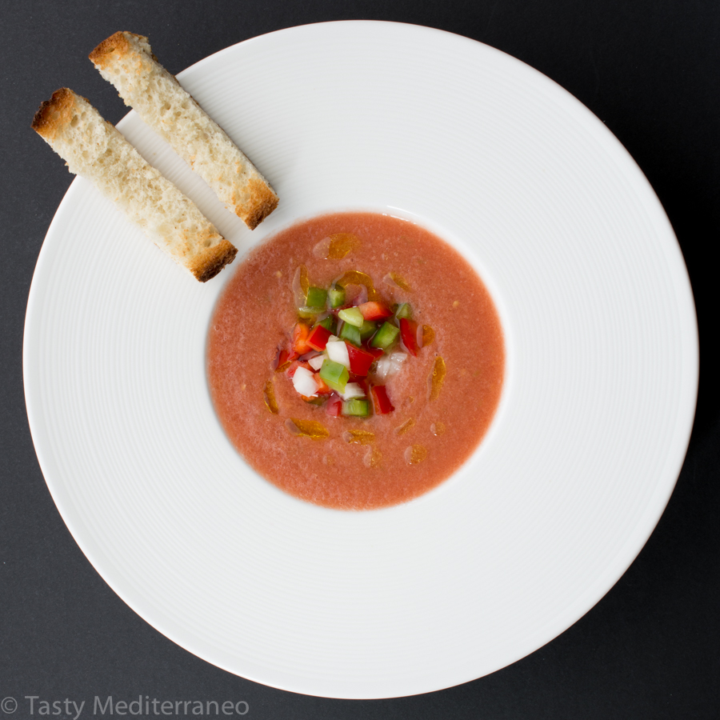
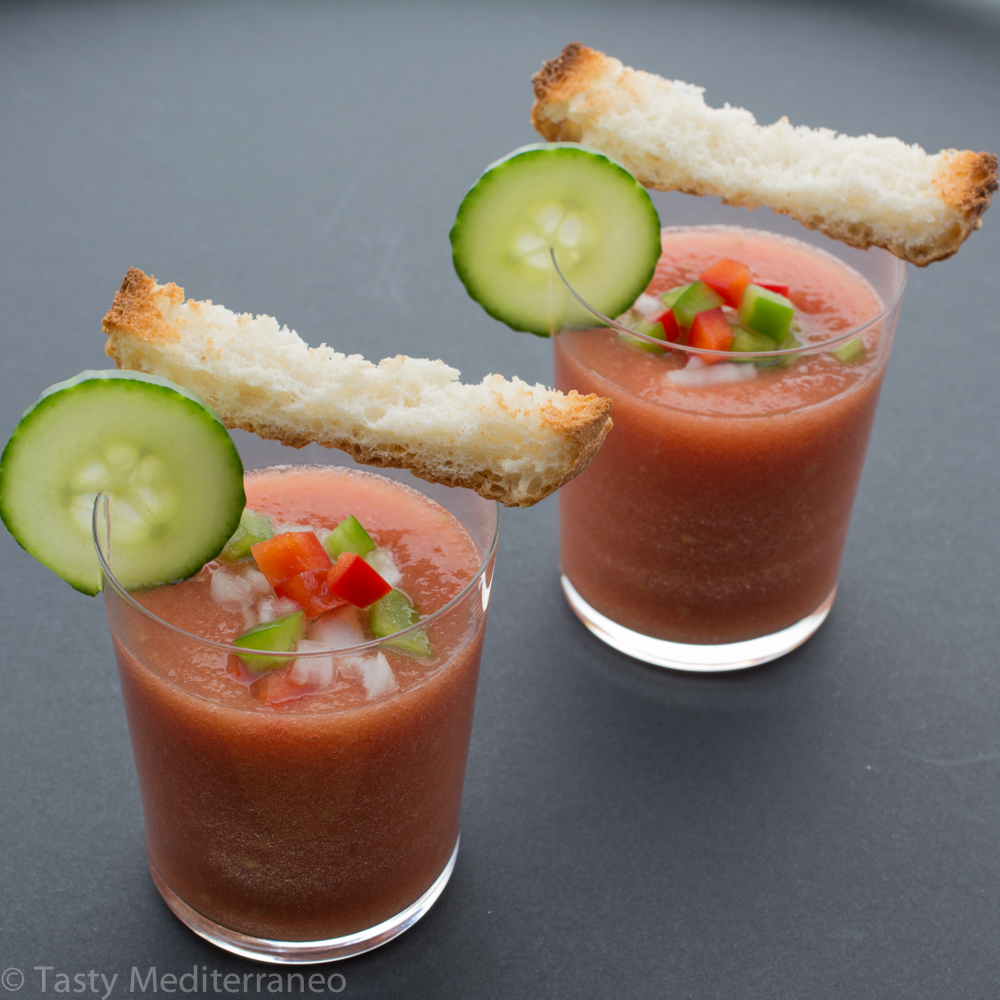

Andalusian Gazpacho - Chilled Tomato Soup

Temperature can get really high during summer in Spain. Not to talk about andalusia in the South of Spain. There, it is very common to reach temperature over 40°C (104°F).

Temperature can get really high during summer in Spain. Not to talk about andalusia in the South of Spain. There, it is very common to reach temperature over 40°C (104°F).

Temperature can get really high during summer in Spain. Not to talk about andalusia in the South of Spain. There, it is very common to reach temperature over 40°C (104°F).

Temperature can get really high during summer in Spain. Not to talk about andalusia in the South of Spain. There, it is very common to reach temperature over 40°C (104°F).

Andalusian Gazpacho - Chilled tomato soup
Ingredients
- 1kg (2lb) ripe tomatoes, peeled and chopped
- 1 tablespoon extra virgin olive oil
- 1 garlic clove, peeled
- 1 small cucumber, peeled and chopped
- ¼ onion, peeled and chopped
- 1 Italian Green Pepper, cored, seeded and chopped (A small green bell pepper will do if you cannot easily find this variety of pepper)
- ½ tablespoon Salt, or more to taste
Instructions
- Have all the vegetables well washed and all the ingredients prepared as indicated in the ingredients description.
- Put all the ingredients into a food processor or blender and process until you get a very smooth purée.
- Chill in the refrigerator for a few hours. Salt to taste, mix and serve in glasses or in soup bowls.
- Enjoy directly or garnish with some toaste bread as well as some diced onion, green and red bell peppers.
Notes
If you want a fairly thin Gazpacho, you could use a coarse sieve and push the purée through.
The original Gazpacho recipe would also add 1 slice of bread and 1 spoon white wine vinegar or sherry vinegar in the mixture. Personally I like Gazpacho with a light taste, so I won't usually add them.
Do not be surprised if your Gazpacho does not look too red. It may depend on the tomatoes quality (I usually use on the vine tomatoes), but in any case it will never be too red. That shows it is a natural and made in the Spanish traditional way using fresh tomatoes. You would never use canned tomatoes to prepare an authentic Gazpacho Andaluz.